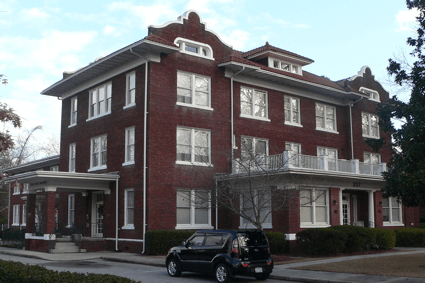
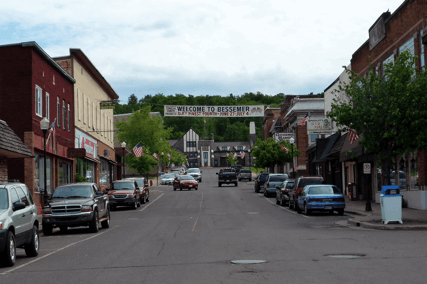
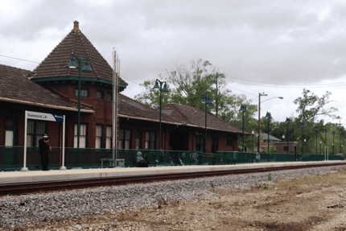
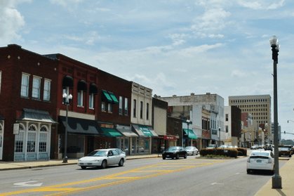
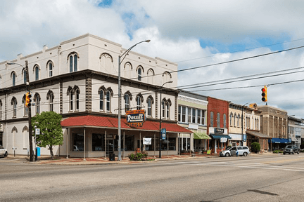

The recent release of the annual Crime in the United States (CIUS) statistics report by the FBI has once again brought the issue of public safety into the media spotlight. Breathless headlines would have you believe that what we are seeing is the beginning of a national crime wave, and while on the national level there has been an increase in homicide and other violent crime, the data in fact paints a more complicated picture. Nationally, the rate of property crime has fallen. Dig a little deeper, and you’ll find that most cities, even the largest, have become safer. Which places – large and small, from coast to coast – are in reality the safest, and which are most dangerous?
While preparing our list of the country’s safest places, it became clear that it isn’t enough to rate cities and towns by crime statistics alone. Becoming a victim of a violent or non-violent crime is only one important part of what we mean when we say “this is a safe place to live.” Our list, therefore, relies on a more robust and expansive definition of safety than what crime statistics alone can tell us.
RewardExpert crunched the numbers to give you the most comprehensive perspective on safety we could. To rank of the safest and most dangerous cities in the country, we not only analyzed FBI crime statistics; we contextualized them as well, keeping in mind the fact that there is much more to safety than crime and murder rates. After all, you are less likely to become a homicide victim than you are to die in a car crash, and likewise, disaster and disease are greater threats to your safety and security than property crime. And finally, while broken bones beat broken windows, safety includes not only life and limb, but livelihood as well.
Taking the FBI crime statistics as our starting point, we used 32 indicators from data sets produced by both the public and private-sector, to compare cities and towns with populations greater than 3,000 people, across 8 major categories: 1) Crime, 2) Mortality Rates, 3) Firearms, 4) Motor vehicle crash risks, 5) Man-made environmental hazards, 6) Natural disasters, 7) Economic and financial risks, and finally, 8) Health risks and health care.
Safest Big Cities
| City & State | Safety | Crime | Firearms | Mortality | Vehical Fatality | Environment | Disaster | Financial | Health |
|---|---|---|---|---|---|---|---|---|---|
| 1. Plano TX | 62.41 | 63 | 42 | 63 | 62 | 57 | 30 | 58 | 68 |
| 2. Irvine CA | 57.85 | 66 | 39 | 60 | 59 | 33 | 26 | 41 | 54 |
| 3. New York NY | 54.96 | 56 | 65 | 59 | 53 | 61 | 57 | 5 | 55.5 |
| 4. Chula Vista CA | 54.31 | 64 | 36 | 52 | 50 | 62 | 13 | 37 | 63.5 |
| 5. San Jose CA | 52.98 | 55 | 34 | 64 | 42 | 44 | 15 | 48 | 74 |
| 6. Austin TX | 52.91 | 47 | 25 | 58 | 40 | 49 | 58 | 65 | 55.5 |
| 7. Aurora CO | 51.53 | 43 | 19 | 66 | 58 | 51 | 29 | 66 | 54 |
| 8. Omaha NE | 51.38 | 37 | 35 | 51 | 18 | 29 | 48 | 64 | 72 |
| 9. Gilbert AZ | 50.76 | 65 | 9 | 33 | 35 | 63 | 9 | 51 | 43.5 |
| 10. San Francisco CA | 57.08 | 26 | 43 | 65 | 56 | 56 | 21 | 47 | 49 |
63.17
Plano, TX
The safest mid-size or big city in the country (population of more than 250,000) is the city of Plano, Texas, a business hub home to the corporate headquarters of many national companies Plano has a very low rate of premature mortality and losses due to natural disasters, and its residents enjoy a high degree of financial security and healthcare access. Income inequality here is unusually low for a city of its size.

62.41
Irvine, CA
Second on our list of the safest larger cities is Irvine, California, located in affluent Orange County. Irvine is distinguished by its extraordinarily low homicide rate, which is below the national average at 1.12 homicides per 100,000 people. Irvine also rates highly on measures of safety such as damage due to natural disasters (5.65th percentile) and premature mortality (4.7 per 100,000). Residents of the city (which is home to numerous universities and tech-industry companies) are, on the whole, financially secure and enjoy healthcare access well above the national average.
57.85
New York City, NY
New York City has come a long way in terms of safety in recent decades. Once one of the most dangerous and crime infested cities, New York City now boasts a murder rate well below the national average, standing at 3.9 per 100,000 (335 in a population of 8,566,917). With some of the strictest gun control laws in the nation, New York has less firearm related fatalities than almost 99% of the country. While New Yorkers are not known for having the healthiest lifestyles, this is mitigated by the city having some of the best healthcare facilities in the nation, as well as a high concentration of medical professionals. And while car crash-related injuries and fatalities are high here, they are less likely to involve city residents, who are well-served by public transportation.

57.07
Chula Vista, CA
Coming in at number four on our list, Chula Vista, California, a mid-size city in the San Diego metropolitan area, is distinguished for having the lowest murder rate of any mid-size or big city in the country, 3.7 per million (only 1 reported in 2016). The safety of Chula Vista is enhanced by its low risk of natural disaster damage, and by its clean environment. Its residents, moreover, have a very low rate of housing and financial insecurity, with some of the lowest rates of foreclosure or mortgage delinquency.

54.96
San Jose, CA
The fifth safest city in the country, in our analysis, is San Jose, California. With over one million residents, San Jose offers a low unemployment rate, relatively high incomes, and even lower rates of mortgage delinquency and foreclosure than Chula Vista (as low as the second percentile, versus fifth). Although the overall crime rate here is not particularly low, violent crime is exceedingly rare, and the premature mortality rate is a mere 0.9 per 100,000.

54.31
Austin, TX
The city of Austin, Texas comes in at number six on our list, despite having had in 2016 a crime rate approximating the national average, and below the median weighted average for all cities >250,000 population (79.76 vs 87.7). This is because of the exceptional degree of financial security its residents enjoy, and it's extraordinarily low levels of unemployment and income inequality (3.4% and 3.6%, in the 7.4th and 2.8th percentile nationwide.) Austin is also very unlikely to be damaged by natural disasters, so its nearly one million inhabitants are safer than crime statistics alone would seem to indicate.

53.34
Aurora, CO
Like many cities on this list, Aurora, Colorado is far less dangerous than crime statistics would indicate. Aurora is the most financially/economically secure city of its size in the country, with foreclosure rates, for instance, below the 1st percentile. Aurora residents have a premature mortality rate of 0.2 per 100,000, and as with most cities in the region, is not subject to much in the way of a risk from natural disasters.
53.11
Omaha, NE
Eighth on our list of the safest midsize and large cities in the country is Omaha, Nebraska. The weighted average of Omaha’s crime rate is below the median for mid-size and larger cities, and middle of the pack nation-wide risks for environmental, health, and premature mortality rates. Omaha is extraordinarily safe from an economic or financial perspective, with less than one third of the median percentile ranking of cities in its size category on this dimension, having very little income inequality. This is not to mention the fact that Omaha has a very low liability to damage by natural disasters.
52.98
Gilbert, AZ
Our ninth safest city breaks with this pattern, making our list in part on the strength of its low crime rate, and below the national average homicide rate of 1.17 per 100,000. Additionally, while its residents face rates of health risks and a high rate of overall premature mortality, Gilbert, Arizona rates well on measures of risk due to natural disaster and environmental contamination, while also being well above average in terms of financial and economic security.
52.90
San Francisco, CA
Last, but not least, we have San Francisco, California, which is a city that would receive lower marks were we to evaluate safety according to crime statistics alone. On this measure, San Francisco is very close to the median for cities of its size, with a slightly higher rate of property crimes, slightly lower rates of violent crime average big city (71 per 10,000 vs 77 per 10,000 average), and a homicide rate that is decidedly lower (6.54 per 100,000 vs. 11.92 per 100000 average). San Francisco has some of the best access to healthcare, with 158 primary care physicians per 100,000 people.
Most Dangerous Big Cities
| City & State | Safety | Crime | Firearms | Mortality | Vehical Fatality | Environment | Disaster | Financial | Health |
|---|---|---|---|---|---|---|---|---|---|
| 66. Tulsa OK | 18.97 | 6 | 1 | 1 | 1 | 12 | 2 | 34 | 16 |
| 65. St. Louis MO | 26.14 | 1 | 5 | 41 | 11 | 1 | 34 | 21 | 14 |
| 64. Cincinati OH | 29.36 | 10 | 2 | 56 | 22 | 10 | 43 | 36 | 33.5 |
| 63. Bakersfield CA | 30.84 | 33 | 7 | 13 | 5 | 55 | 18 | 9 | 38.5 |
| 62. Toledo OH | 31.11 | 17 | 3 | 55 | 12 | 6 | 24 | 12 | 28 |
| 61. Tuscon AZ | 31.42 | 25 | 21 | 2 | 17 | 24 | 65 | 31 | 19 |
| 60. Cleveland OH | 31.60 | 3 | 8 | 48 | 41 | 2 | 51 | 7 | 14.5 |
| 59. Buffalo NY | 31.88 | 23 | 16 | 17 | 45 | 30 | 22 | 19 | 3.5 |
| 58. Gilbert AZ | 31.88 | 14 | 18 | 38 | 37 | 4 | 4 | 15 | 28 |
| 57. Oklahoma City OK | 32.54 | 24 | 19 | 8 | 4 | 15 | 56 | 54 | 51 |

18.97
Tulsa, OK
First on our list of the most dangerous midsize and larger cities is Tulsa, Oklahoma. One of several cities, both large and small, in Oklahoma that are among the most dangerous in the country, Tulsa ranks first on three metrics: 1) it has the highest rate of firearm-related fatalities (total of 114 deaths in 2016; or 21 per 100,000); 2) it has the highest rate of fatal automobile crashes reported both on the local level through the DOT FARS system during 2015 (42 fatalities in 41 accidents), and on the county level (with which the city is coextensive) according to the CDC report (50 fatalities; or 23 per 100,000); and 3) it has the highest overall rate of premature deaths per capita. Coupled with homicide and violent crime rates well above the national average, and the average for cities in its size bracket, Tulsa easily edges out St. Louis, Missouri.
26.14
St. Louis, MO
Were we to consider safety to be synonymous with safety from crime, St. Louis would have taken first place hands-down, with a homicide rate of 57.7 per 100,000 (close to 20 times the national average of 3.4 per 100,000). St. Louis also takes first place for the number of EPA-designated contaminated sites and toxic chemical releases, both absolutely and relative to the city’s greatly diminished population. St. Louis is only slightly safer according to other measures, with a lower rate of losses due to natural disaster, and lower foreclosure and fatal drug overdose rates than most of the other cities on this list.
29.36
Cincinnati, OH
While Cincinnati rates lowest among these dangerous cities in unemployment and other economic factors, and has the lowest rate of firearm related deaths, its crime rate is nothing to be proud of – its homicide rate of 19 per 100,000 is six times the national average. Cincinnati comes in fourth on our list due to its high overall mortality rates, and the highest rate of fatalities due to drug overdoses, especially opioids. Finally, Cincinnati has the dubious distinction of having the highest rate of arson in the country (162.272 per 100,000 people).
30.84
Bakersfield, CA
Bakersfield, California is one instance where we have rated a city as being particularly dangerous for reasons other than crime. In fact, Bakersfield has a per capita homicide rate that is only slightly more than double the national average. Likewise, Bakersfield has relatively few EPA-designated contaminated sites, as compared to other cities on our list. It takes its place on this list due to a high incidence of arson, and an extremely high unemployment rate.

31.11
Toledo, OH
The fifth most dangerous city in the US is the second of three in the state of Ohio to appear on our list. Toledo, Ohio rates highly dangerous on several measures: rates of violent crime, overdose fatalities, foreclosures, and environmental contamination. There are fully 27 EPA Superfund sites within the city, and there are 74 incidents recorded the EPA Toxic Release Inventory. Finally, the city has a high incidence rate of serious workplace incidents involving the injury or death of an employee.
31.42
Tuscon, AZ
Tucson, Arizona has a homicide rate barely above the national average (5.4 per 100,000 vs. 3.4 per 100,000), and rates well – relative to the other cities on this list – on measures of financial risk and overall premature mortality risk. However, these are still quite high compared to the rest of the country. Firearm-related and automobile crash fatality rates are very high in Tucson, as is the unemployment rate. The USDOT Fatal Crash Reporting System reported 52 fatal car crashes in 2015, while there are 222 licensed gun dealers listed in the most current available data from the ATF.

31.60
Cleveland, OH
The city of Cleveland, Ohio is well-known to be a dangerous city, and the statistics and data support the common-knowledge viewpoint. Cleveland has the highest foreclosure rate in the nation for a major city (1.2%), as well as the highest rate of income inequality (92.7th percentile for all cities of any size). Cleveland has the second highest rate of violent crime, and of homicide (16.3 per 1,000, and 34.9 per 100,000 respectively), and the most rapes per capita. Cleveland is also home to the second-highest number of contaminated sites, including 37 Superfund sites and 219 toxic chemical releases. Arson and overdose rates are also among the highest in the nation, and just about the only thing Cleveland has to offer as far as safety is concerned is its low risk of damage due to natural disaster.
31.88
Buffalo, NY
As the most dangerous city in New York, it is only natural that Buffalo would be one of the most dangerous mid-size cities in the country. Buffalo is second only to Cleveland and St. Louis in environmentally hazardous sites and toxic chemical contamination. Buffalo ranks in the 86.5th percentile for workplace injuries and fatalities. This decline, though, has led Buffalo to have the second highest rate of foreclosures, leaving the city with more vacant housing than it can handle. With a violent crime rate of 11.09 per 1,000, and a murder rate of 17.091 per 100,000 in 2016, Buffalo is not safe by any measure – as a whole.
31.88
Pittsburgh, PA
While Pittsburgh, Pennsylvania has improved dramatically in the course of the last twenty years, it remains dangerous enough to earn its place at number nine on our list of the most dangerous big cities in the country. The biggest threats to safety in Pittsburgh are moderately high violent crime rates and a homicide rate three times the national average (10.91 per 100,000). Pittsburgh is made safer, however, by the high number of hospitals and primary care physicians it is home to (15 hospitals and 108.56 PCPs per capita).

32.54
Oklahoma City, OK
The list of the top ten most dangerous midsize and big cities ends very close to where it began, with Oklahoma City at number ten. Like Tulsa, Oklahoma City has an extraordinarily high number and rate of fatalities due to automobile accidents, with 86 deaths recorded here in 2015 by the Fatal Crash Reporting System, and a 15 per 100,000 vehicle-related mortality rate in the 2017 CDC report. Oklahoma City does not differ when it comes to the high level of firearm-related fatalities, and overall high rate of violent crime. Healthcare access is relatively poor, although overdose fatalities are surprisingly low. Low unemployment, high median income, and low income inequality mitigate Oklahoma City’s high rate of foreclosure, but this does not do enough to boost safety to bump Oklahoma City off of our list.
The 10 Safest Smaller Cities in the US
Note: Smaller cities are defined as those having a population of less than 250,000. We have included only the 50 best and 50 worst cities out of a total of 5255. Due to ties, not all rankings range from 1 to 100.
| City & State | Safety | Crime | Firearms | Mortality | Vehical Fatality | Environment | Disaster | Financial | Health |
|---|---|---|---|---|---|---|---|---|---|
| 1. Rock Valley IA | 88.79 | 94 | 68 | 84 | 64 | 59 | 90 | 84 | 57.97 |
| 2. Rockport ME | 86.43 | 90 | 68 | 90 | 77 | 59 | 77 | 48 | 48.715 |
| 3. Elko New Market MN | 84.09 | 99 | 54 | 82 | 61 | 59 | 92 | 88 | 75.5 |
| 4. New Canaan CT | 84.06 | 82 | 68 | 90 | 77 | 59 | 66 | 89 | 74.93 |
| 5. Granby CT | 83.82 | 79 | 68 | 90 | 53 | 59 | 79 | 89 | 86 |
| 6. Carlisle MA | 81.70 | 85 | 68 | 90 | 53 | 59 | 68 | 89 | 75 |
| 7. Winfield IL | 80.95 | 70 | 65 | 63 | 77 | 59 | 82 | 66 | 70,375 |
| 8. Yuma CO | 80.58 | 100 | 50 | 52 | 59 | 59 | 99 | 100 | 65 |
| 9. Commerce Township MI | 79.58 | 59 | 68 | 90 | 77 | 57 | 91 | 89 | 83.9 |
| 10. Orange City IA | 79.56 | 64 | 68 | 84 | 64 | 47 | 85 | 84 | 70.015 |
88.79
Rock Valley, IA
The safest small city in the US, in our analysis is Rock Valley, Iowa. Located in the northwestern portion of the state, in Sioux County. There were no violent crimes committed in Rock Valley during 2016, and non-violent crime here was limited to theft and a handful of burglaries. According to the EPA, the environment here is relatively free of pollution. Remarkably, the inhabitants of Rock Valley have short and safe commutes.

86.43
Rockport, ME
A former artist colony on in the Mid-Coast region of Maine, Rockport comes in at second place. Like Rock Valley, commutes are safe and short, and the local environment pristine. Risks to life and limb due to illness, gun violence, and flooding are exceptionally low, which more than makes up for what crime does take place here.

84.09
Elko New Market, MN
Formed in 2006 by the merger of the towns of Elko and New Market, this small city of 4,831, is part of the exurban belt of the Minneapolis-St. Paul metropolitan area. Crime here is virtually non-existent, with only 0.14% of the nation scoring better in our weighted average. Residents live in relative security along all of our metrics, and have good access to healthcare, with extremely low levels of health risks.

84.06
New Canaan, CT
Coming in at fourth place is the city of New Canaan, Connecticut. Located in the very affluent Gold Coast region of the state, 10 miles north of Greenwich, residents of New Canaan had the highest median income in the country as of 2008. New Canaan is served by a branch of the Metro-North railroad’s New Haven line, making for a safe and short commute to jobs in New York City. Only 3 violent crimes were reported in 2016, none of which involved firearms.

83.82
Granby, CT
Located in the rural Litchfield Hills region of Connecticut, within a short drive of both Hartford, and Springfield, Massachusetts, the city of Granby is about as safe as its larger neighbors are not. There are no environmental hazards to speak of, and likewise no deaths due to firearms or automobile accidents. The only violent crimes reported during 2016 in Granby were two assaults.
81.70
Carlisle, MA
At sixth place on our list we have the town of Carlisle, Massachusetts, located to the northwest of Boston, adjacent to the town of Concord. The only violent crime to occur here last year was a single robbery. Located in affluent Middlesex County, home to some of the highest property values in the nation, the only risk factors affecting residents of Carlisle are economic and financial in nature. Across all other measures of safety and security, Carlisle is hard to beat.

80.95
Winfield, IL
We are not the first to note the extraordinarily safe suburban Chicago-area village of Winfield, Illinois. Winfield is home to one of the largest hospitals in the suburbs of Chicago, and is served by a commuter rail line, making for exceptional health care quality and accessibility, and safe, car-free commutes for those working in the urban core.

80.58
Yuma, CO
Eighth on our list, the city of Yuma, Colorado, located in the eastern plains region near the Kansas state line, would take or tie for first place if crime were the sole determinant of safety. This small city of 3,612 residents had exactly zero crimes reported during 2016, despite the risk factor presented by easy access to firearms due to the eight licensed dealers located here. Its middling healthcare access and risk factor rankings are outweighed by the personal and economic security of its residents, and the lack of significant risks posed by natural disasters or environmental hazards.
Photo from Charter Township of Commerce, Michigan
79.58
Commerce Township, MI
Ninth on our list is Commerce Township, Michigan, a suburb of Detroit, located in wealthy Oakland county. This is another instance of where our analysis differs from those relying solely on crime statistics. Commerce Township is only in the 83rd percentile for safety from criminal acts (18 violent crimes in a population of 38,000). However, this is more than counterbalanced by high ratings on other measures of personal, economic and community safety.

78.84
Orange City, IA
Rounding out our top ten is Orange City, Iowa, the county seat of Sioux County (also home to the safest small city in the country). While the crime rate here is higher than its smaller neighbors, it is insignificant as compared to much of the country. Other than the risk of tornadoes, only economic, financial, and housing related risks are of any significant level, and are hardly of the magnitude necessary to make Orange City dangerous in any sense of the word.
Most Dangerous Smaller Cities
| City & State | Safety | Crime | Firearms | Mortality | Vehical Fatality | Environment | Disaster | Financial | Health |
|---|---|---|---|---|---|---|---|---|---|
| 100. Pine Bluff AR | 12.23 | 8 | 11 | 9 | 28 | 5 | 23 | 1 | 57.5 |
| 99. Lincoln AL | 14.10 | 19 | 5 | 36 | 34 | 23 | 12 | 22 | 17.5 |
| 98. Bastrop LA | 15.68 | 9 | 4 | 16 | 19 | 40 | 32 | 4 | 35 |
| 97. Del City OK | 17.79 | 22 | 40 | 17 | 26 | 43 | 6 | 64 | 12.5 |
| 96. Lumberton NC | 19.03 | 1 | 14 | 39 | 7 | 17 | 61 | 19 | 59 |
| 95. Bessemer AL | 19.78 | 7 | 35 | 33 | 14 | 8 | 29 | 14 | 45 |
| 94. Shawnee OK | 19.97 | 38 | 24 | 15 | 13 | 48 | 19 | 67 | 38 |
| 93. Hammond LA | 19.98 | 5 | 32 | 14 | 16 | 53 | 44 | 2 | 35 |
| 92. Anniston AL | 20.00 | 3 | 7 | 34 | 25 | 1 | 16 | 13 | 56.5 |
| 91. Selma AL | 20.07 | 2 | 2 | 29 | 44 | 4 | 27 | 8 | 32.5 |

12.23
Pine Bluff, AR
The number one most dangerous small city in America is clearly Pine Bluff, Arkansas, home to 43,976 people. Only 1.42% of all places for which the FBI published crime statistics had a higher incidence of both violent and nonviolent crimes (including 9 homicides, 38 rapes, and 62 acts of arson), while according to data released by the Centers for Disease Control in March of 2017, the rate of premature deaths (defined as death at an age of less than 70 years old) is in the 97th percentile. Pine Bluff also contains a high number of EPA-designated polluted sites and toxic chemical releases, while residents are at only slightly less risk due to unhealthy behaviors, disease, and flooding.

Photo from City Of Lincoln, Alabama
14.10
Lincoln, AL
Located in the Birmingham, Alabama region, the town of Lincoln is afflicted by exceptionally high rates of crime and premature death. A historically industrial town with an economy based in manufacturing, environmental conditions are about what one would expect, while OSHA reports at least 16 workplace accidents involving loss of life or limb in the last 15 years. Despite an unusually low rate of gun crime and car accidents for the region, Lincoln takes number two on our list of most dangerous small cities on the basis of its relatively high level of health hazards and risk factors, and its exceptionally low level of access to healthcare (3.1 percentile)

15.68
Bastrop, LA
Third on our list is the city of Bastrop, Louisiana, the seat of Morehouse Parish in the northernmost part of the state. Bastrop takes the cake for lives cut short for any reason, ranking in the 99th percentile for mortality rate, with a motor vehicle fatality rate of 28 in 100,000, of which 35% involved an alcohol-impaired driver. In terms of its crime rate, Bastrop is hardly any better, while healthcare and highway safety here are dismal. The fact that all of this is likely to be a legacy of socioeconomic and racial divides does not change the fact that times are hard in the city of Bastrop.

17.79
Del City, OK
Part of the Oklahoma City metropolitan area, residents of Del City face many risks to life, limb, and property, not the least of which is the destructive power of tornadoes, which are all too alarmingly common in this neck of the woods. Much of the city was damaged in 1999 by an outbreak of tornadoes, which injured 134 people, with another tornado striking here less than five years later. Crime and health risks are likewise quite high, as are gun violence and premature mortality rates. These risks are partially mitigated by somewhat greater economic and financial security.

19.03
Lumberton, NC
The city of Lumberton, North Carolina is located in the coastal Inner Banks region, and not surprisingly faces a not significant risk of being impacted by natural disasters – specifically, hurricanes. This, however, is the lesser of many evils that earn it fifth place on our list of the most dangerous small cities in the nation. Like Bastrop, Louisiana, and others to follow, this is in part a consequence of the socio-economic heritage of segregation and racialized politics in the southern US. The FBI Crime in the United States statistics for 2016 show a high rate of both violent and property crimes, which is weighted even higher in our analysis due to high incidence rates of homicide (4.1 per 10,000) and arson.

19.78
Bessemer, AL
The city of Bessemer, Alabama is the second city in the Birmingham region to appear on our list of dangerous small cities. Bessemer was once a center of the steel industry, with mining operations that provided the raw materials. Manufacturing and mining continue in and around the city, and pose ongoing health and occupational hazards to residents. Today, the city is home to five EPA Superfund sites, and the EPA also records 23 separate incidents on its Toxic Release Inventory. With high crime, mortality, and automobile accident rates, and considerable health risks, Bessemer would be considerably more dangerous if not for its relatively high degree of access to health care.

19.97
Shawnee, OH
The seventh most dangerous small city is the second in the greater Oklahoma City metro area to appear on our list. Not surprisingly risks to health and home are posed by severe weather, long commutes alone in a car, workplace accidents, and finally, a high fatality rate due to drug overdoses/poisonings. The county-wide firearm fatality rate of 15 per 100,000 and 33 ATF licensed gun dealers doing business in the city makes Shawnee even more dangerous.

19.98
Hammond, LA
Eighth on our list is the city of Hammond, in Eastern Louisiana. Close as it is to New Orleans, the threat posed by hurricanes and flooding are less severe than that posed by violent crime and financial or housing insecurity. With some of the highest foreclosure, serious delinquency, unemployment, and income inequality rates (all in the 90th percentile or higher) in the country, the crime rate of Hammond is unsurprisingly high as well.

20.00
Anniston, AL
With a violent crime rate of 328.7 crimes per 10,000 people (the 99.5th percentile nationwide in our weighted average of all crime), our top 10 would be incomplete without the city of Anniston, Alabama. The residents of this city face numerous hazards to their health and safety, not the least of which is the whopping 40 sites on the EPA register, including 14 Superfund sites and 18 toxic chemical releases. Additionally, like much of the region, Anniston has been damaged by both tornadoes and hurricanes.

20.07
Selma, AL
Barely behind Anniston, completing our list of the top 10 most dangerous smaller cities, is Selma, Alabama. Like Anniston, Selma residents contend with staggeringly high crime rates and environmental contamination. And while they have a lower incidence of fatal car crashes, fully 65% of those that do occur involve a drunk driver. Selma has shockingly unsafe workplaces, with 12 accidents involving serious injuries or death reported by OSHA. Finally, in keeping with a running theme, income inequality here is in the 99th percentile.
Methodology
RewardExpert analyzed the 2016 FBI Crime in the United States statistics for every location for which data was included in Table 6: Crimes Known to Law Enforcement. We calculated a weighted average of violent and nonviolent crimes (80-20), modified to give additional weight to rates of more serious crime, i.e. homicide, rape, and arson. We then excluded places with fewer than 3,000 inhabitants for reasons of statistical significance (the locations with both the highest and lowest incidence of violent and non-violent crime were places with populations < 10 people).
We used GIS (Geographical Information Systems) data provided by the US Census bureau and analyzed data sets provided by the Environmental Protection Agency (Superfund/Brownfields sites, Toxic Release Inventory, and public institution structure points (hospitals and emergency/law enforcement facilities)), FEMA (Flood Loss & Emergency Response), NOAA (Tornado injuries/fatalities & economic damage), the USDOT (Fatal Crash Reporting System), annual daily traffic counts from Kalibrate, and foreclosure and mortgage delinquency rates as of May 2017 from CoreLogic. We also included various indicators from the CDC County Health Ratings and Roadmap data from March of 2017, including premature mortality rates by type, and other public health related indicators. Finally, we tallied the number of fatal workplace accidents recorded by OSHA, the number of ATF licensed firearms dealers by location or zip code.
We then calculated weighted percentile rankings for each set of indicators, which were then combined with the weighted average of violent and non-violent crime rates from the FBI CUIS statistics, to produce a final composite risk score.
Indicators & Sources
Crime Rates (City-Level, Double weight, adjusted)
- Violent Crime Rate
- Property Crime Rate
- Homicide, Rape, and Arson Rates (FBI Crime in the United States Statistics 2016)
Mortality Rates (County-Level)
- Total Premature Death Rate (CDC County Health Ratings & Roadmap 2017)
- Death Rate Due to Injuries (CDC)
Firearms (County-Level Death Rate, City-Level Dealer Data)
- Death Rate by Firearms (CDC)
- Firearms Dealer Licensing (ATF)
Vehicle & Commute Safety (City-wide Point-Count Average / County-level)
- FARS Crash Reporting System (DOT)
- Motor Vehicle Crash Death Rate (CDC)
- Daily Traffic Counts (Kalibrate)
- Long Commutes % (CDC)
Environmental Hazards (Point-Count City-level Data)
- Superfund Sites (EPA)
- Brownfields Sites (EPA)
- Toxic Release Sites (EPA)
- Radiation Sites (EPA)
Natural Disaster (County-Level & Line-Intersection with Zip-Code in County)
- Economic Flood Losses (FEMA)
- Personal & Property Damage from Tornado Activity (NWS/NOAA)
Occupational (City-Level Aggregated)
- OSHA Accident, Injury & Inspection Data (OSHA)
Healthcare Affordability & Access (Point-Count & County-Level)
- Economic Flood Losses (FEMA)
- Personal & Property Damage from Tornado Activity (NWS/NOAA)
Housing & Financial (County-Level & Combined Statistical Area)
- Unemployment Rate (CDC)
- Economic Inequality Ratio (CDC)
- 30-Day Mortgage Delinquency Rates, May 2017 (CoreLogic)
- 90-Day Mortgage Delinquency Rates, May 2017 (CoreLogic)
- Foreclosure Rates, May 2017 & Change May 2016-17 (CoreLogic)
Disease, Lifestyle, Health Risks
- Cancer Rate (CDC)
- HIV Rate (CDC)
- Obesity Rate (CDC)
- Drug Poisoning Mortality Rates (NCHS)
- & Overdose Rates (CDC)
Geographical/Demographic Data
- US Census Bureau – Place, Urban Area, Tract, ZCTA, and County level data.
Links
- CoreLogic Foreclosure & Delinquency Data
- CDC 2017 County Health Rankings National Data
- FEMA Emergency Preparedness Data
- EPA Geospatial Data
- USDOT Fatal Crash Reporting System
- NCHS Drug Poisoning Fatalities
- OSHA Enforcement Data
- NWS: 1950-2006 Database of Tornado, Large Hail, and Damaging Wind Reports
- Kalibrate Traffic Count Data
- Licensed Firearms Dealers